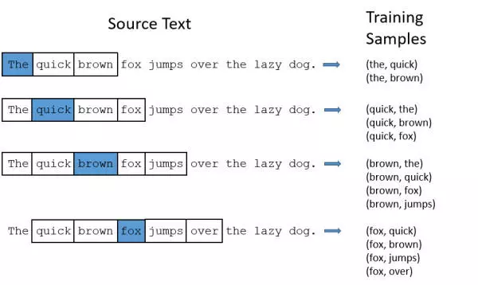

NLP-Word2vec 算法之Skip-Gram
[TOC]
Word2Vec模型中，主要有Skip-Gram和CBOW两种模型，从直观上理解，Skip-Gram是给定input word来预测上下文。而CBOW是给定上下文，来预测input word。本篇文章仅讲解Skip-Gram模型。
模型
Word2Vec模型实际上分为了两个部分，第一部分为建立模型，第二部分是通过模型获取嵌入词向量。Word2Vec的整个建模过程实际上与自编码器（auto-encoder）的思想很相似，即先基于训练数据构建一个神经网络，当这个模型训练好以后，我们并不会用这个训练好的模型处理新的任务，我们真正需要的是这个模型通过训练数据所学得的参数，例如隐层的权重矩阵——后面我们将会看到这些权重在Word2Vec中实际上就是我们试图去学习的“word vectors”。基于训练数据建模的过程，我们给它一个名字叫“Fake Task”，意味着建模并不是我们最终的目的。
上面提到的这种方法实际上会在无监督特征学习（unsupervised feature learning）中见到，最常见的就是自编码器（auto-encoder）：通过在隐层将输入进行编码压缩，继而在输出层将数据解码恢复初始状态，训练完成后，我们会将输出层“砍掉”，仅保留隐层。
再次提一下什么是word embedding（词嵌入），一般的机器学习模型包括神经网络的输入都是数值型的，所以如果要处理词，首先需要将词转化成数值型的向量。最初的想法是构建词汇表V，然后将每一个词转化成一个1*V的一个one-hot向量，one-hot向量中文翻译就是独热，也叫独热编码，就是向量中只有一个1，其他元素都为0。但是很快研究者发现这样的表示不仅得到了大量的非常稀疏的向量或者矩阵，并且丢失了很多信息。1957年，Firth提出了一个词的意思是由他所处的环境或者说他周围的词所提供，也就是我们通常说的上下文。于是共现矩阵的理论就被提出了，共现矩阵的每个元素Xij便是单词i和单词j共同出现的次数，关于共同出现我们可以定义一个距离，当距离小于一直阈值可以判断为共同出现。
The Fake Task
我们在上面提到，训练模型的真正目的是获得模型基于训练数据学得的隐层权重。为了得到这些权重，我们首先要构建一个完整的神经网络作为我们的“Fake Task”，后面再返回来看通过“Fake Task”我们如何间接地得到这些词向量。
接下来我们来看看如何训练神经网络。假如我们有一个句子“The dog barked at the mailman”。
首先我们选句子中间的一个词作为我们的输入词，例如我们选取“dog”作为input word；
有了input word以后，我们再定义一个叫做skip_window的参数，它代表着我们从当前input word的一侧（左边或右边）选取词的数量。如果我们设置skip_window=2，那么我们最终获得窗口中的词（包括input word在内）就是[‘The’, ‘dog’，’barked’, ‘at’]。skip_window=2代表着选取左input word左侧2个词和右侧2个词进入我们的窗口，所以整个窗口大小span=2x2=4。另一个参数叫num_skips，它代表着我们从整个窗口中选取多少个不同的词作为我们的output word，当skip_window=2，num_skips=2时，我们将会得到两组(input word, output word) 形式的训练数据，即(‘dog’, ‘barked’)，(‘dog’, ‘the’)。
神经网络基于这些训练数据将会输出一个概率分布，这个概率代表着我们的词典中的每个词是output word的可能性。这句话有点绕，我们来看个栗子。第二步中我们在设置skip_window和num_skips=2的情况下获得了两组训练数据。假如我们先拿一组数据 (‘dog’, ‘barked’) 来训练神经网络，那么模型通过学习这个训练样本，会告诉我们词汇表中每个单词是“barked”的概率大小。
首先我们选句子中间的一个词作为我们的输入词，例如我们选取“dog”作为input word；
有了input word以后，我们再定义一个叫做skip_window的参数，它代表着我们从当前input word的一侧（左边或右边）选取词的数量。如果我们设置skip_window=2，那么我们最终获得窗口中的词（包括input word在内）就是[‘The’, ‘dog’，’barked’, ‘at’]。skip_window=2代表着选取左input word左侧2个词和右侧2个词进入我们的窗口，所以整个窗口大小span=2x2=4。另一个参数叫num_skips，它代表着我们从整个窗口中选取多少个不同的词作为我们的output word，当skip_window=2，num_skips=2时，我们将会得到两组(input word, output word) 形式的训练数据，即(‘dog’, ‘barked’)，(‘dog’, ‘the’)。
神经网络基于这些训练数据将会输出一个概率分布，这个概率代表着我们的词典中的每个词是output word的可能性。这句话有点绕，我们来看个栗子。第二步中我们在设置skip_window和num_skips=2的情况下获得了两组训练数据。假如我们先拿一组数据 (‘dog’, ‘barked’) 来训练神经网络，那么模型通过学习这个训练样本，会告诉我们词汇表中每个单词是“barked”的概率大小。

我们的模型将会从每对单词出现的次数中习得统计结果。例如，我们的神经网络可能会得到更多类似（“Soviet“，”Union“）这样的训练样本对，而对于（”Soviet“，”Sasquatch“）这样的组合却看到的很少。因此，当我们的模型完成训练后，给定一个单词”Soviet“作为输入，输出的结果中”Union“或者”Russia“要比”Sasquatch“被赋予更高的概率。
模型细节
我们如何来表示这些单词呢？
首先，我们都知道神经网络只能接受数值输入，我们不可能把一个单词字符串作为输入，因此我们得想个办法来表示这些单词。最常用的办法就是基于训练文档来构建我们自己的词汇表（vocabulary）再对单词进行one-hot编码。
假设从我们的训练文档中抽取出10000个唯一不重复的单词组成词汇表。我们对这10000个单词进行one-hot编码，得到的每个单词都是一个10000维的向量，向量每个维度的值只有0或者1，假如单词ants在词汇表中的出现位置为第3个，那么ants的向量就是一个第三维度取值为1，其他维都为0的10000维的向量（ants=[0, 0, 1, 0, …, 0]）。
还是上面的例子，“The dog barked at the mailman”，那么我们基于这个句子，可以构建一个大小为5的词汇表（忽略大小写和标点符号）：(“the”, “dog”, “barked”, “at”, “mailman”)，我们对这个词汇表的单词进行编号0-4。那么”dog“就可以被表示为一个5维向量[0, 1, 0, 0, 0]。
模型的输入如果为一个10000维的向量，那么输出也是一个10000维度（词汇表的大小）的向量，它包含了10000个概率，每一个概率代表着当前词是输入样本中output word的概率大小。
下图是神经网络的结构
隐层没有使用任何激活函数，但是输出层使用了sotfmax。
我们基于成对的单词来对神经网络进行训练，训练样本是 ( input word, output word ) 这样的单词对，input word和output word都是one-hot编码的向量。最终模型的输出是一个概率分布。
隐层
说完单词的编码和训练样本的选取，我们来看下我们的隐层。如果我们现在想用300个特征来表示一个单词（即每个词可以被表示为300维的向量）。那么隐层的权重矩阵应该为10000行，300列（隐层有300个结点）。
Google在最新发布的基于Google news数据集训练的模型中使用的就是300个特征的词向量。词向量的维度是一个可以调节的超参数（在Python的gensim包中封装的Word2Vec接口默认的词向量大小为100， window_size为5）。
看下面的图片，左右两张图分别从不同角度代表了输入层-隐层的权重矩阵。左图中每一列代表一个10000维的词向量和隐层单个神经元连接的权重向量。从右边的图来看，每一行实际上代表了每个单词的词向量
所以我们最终的目标就是学习这个隐层的权重矩阵。
我们现在回来接着通过模型的定义来训练我们的这个模型。上面我们提到，input word和output word都会被我们进行one-hot编码。仔细想一下，我们的输入被one-hot编码以后大多数维度上都是0（实际上仅有一个位置为1），所以这个向量相当稀疏，那么会造成什么结果呢。如果我们将一个1 x 10000的向量和10000 x 300的矩阵相乘，它会消耗相当大的计算资源，为了高效计算，它仅仅会选择矩阵中对应的向量中维度值为1的索引行（这句话很绕），看图就明白。
们来看一下上图中的矩阵运算，左边分别是1 x 5和5 x 3的矩阵，结果应该是1 x 3的矩阵，按照矩阵乘法的规则，结果的第一行第一列元素为0 x 17 + 0 x 23 + 0 x 4 + 1 x 10 + 0 x 11 = 10，同理可得其余两个元素为12，19。如果10000个维度的矩阵采用这样的计算方式是十分低效的。
为了有效地进行计算，这种稀疏状态下不会进行矩阵乘法计算，可以看到矩阵的计算的结果实际上是矩阵对应的向量中值为1的索引，上面的例子中，左边向量中取值为1的对应维度为3（下标从0开始），那么计算结果就是矩阵的第3行（下标从0开始）—— [10, 12, 19]，这样模型中的隐层权重矩阵便成了一个”查找表“（lookup table），进行矩阵计算时，直接去查输入向量中取值为1的维度下对应的那些权重值。隐层的输出就是每个输入单词的“嵌入词向量”。
输出层
经过神经网络隐层的计算，ants这个词会从一个1 x 10000的向量变成1 x 300的向量，再被输入到输出层。输出层是一个softmax回归分类器，它的每个结点将会输出一个0-1之间的值（概率），这些所有输出层神经元结点的概率之和为1。
下面是一个例子，训练样本为 (input word: “ants”， output word: “car”) 的计算示意图。